Chapter 8: Photosynthesis¶
Introduction¶
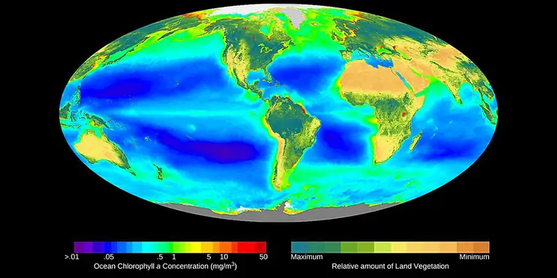
The metabolic processes in all organisms—from bacteria to humans—require energy. To get this energy, many organisms access stored energy by eating, that is, by ingesting other organisms. But where does the stored energy in food originate? All of this energy can be traced back to photosynthesis.
8.1 Overview of Photosynthesis¶
Learning Objectives
By the end of this section, you will be able to do the following:
- Explain the significance of photosynthesis to other living organisms
- Describe the main structures involved in photosynthesis
- Identify the substrates and products of photosynthesis
Photosynthesis is essential to almost all life on earth; both plants and animals depend on it. It is the only biological process that can capture energy that originates from sunlight and convert it into chemical compounds (carbohydrates) that every organism uses to power its metabolism. It is also a source of oxygen necessary for many living organisms. In brief, the energy of sunlight is “captured” to energize electrons, whose energy is then stored in the covalent bonds of sugar molecules. How long lasting and stable are those covalent bonds? The energy extracted today by the burning of coal and petroleum products represents sunlight energy captured and stored by photosynthesis 350 to 200 million years ago during the Carboniferous Period.
Plants, algae, and a group of bacteria called cyanobacteria are the only organisms capable of performing photosynthesis (Figure 8.2). Because they use light to manufacture their own food, they are called photoautotrophs (literally, “self-feeders using light”). Other organisms, such as animals, fungi, and most other bacteria, are termed heterotrophs (“other feeders”), because they must rely on the sugars produced by photosynthetic organisms for their energy needs. A third very interesting group of bacteria synthesize sugars, not by using sunlight’s energy, but by extracting energy from inorganic chemical compounds. For this reason, they are referred to as chemoautotrophs.
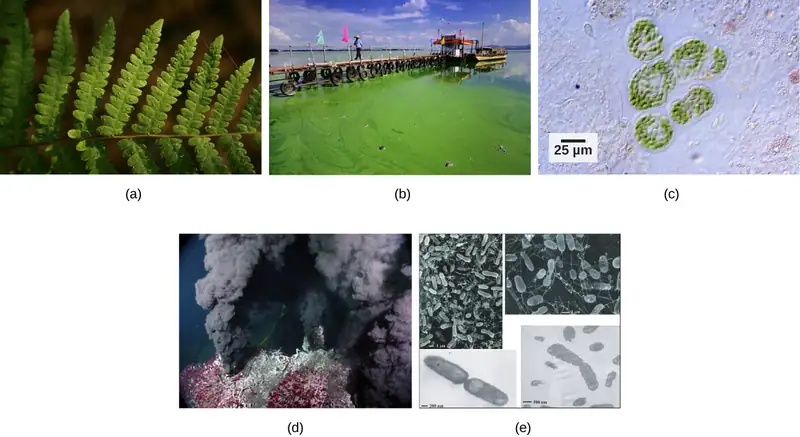
The importance of photosynthesis is not just that it can capture sunlight’s energy. After all, a lizard sunning itself on a cold day can use the sun’s energy to warm up in a process called behavioral thermoregulation. In contrast, photosynthesis is vital because it evolved as a way to store the energy from solar radiation (the “photo-” part) to energy in the carbon-carbon bonds of carbohydrate molecules (the “-synthesis” part). Those carbohydrates are the energy source that heterotrophs use to power the synthesis of ATP via respiration. Therefore, photosynthesis powers 99 percent of Earth’s ecosystems. When a top predator, such as a wolf, preys on a deer (Figure 8.3), the wolf is at the end of an energy path that went from nuclear reactions on the surface of the sun, to visible light, to photosynthesis, to vegetation, to deer, and finally to the wolf.
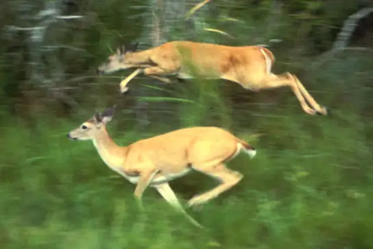
Main Structures and Summary of Photosynthesis¶
Photosynthesis is a multi-step process that requires specific wavelengths of visible sunlight, carbon dioxide (which is low in energy), and water as substrates (Figure 8.4). After the process is complete, it releases oxygen and produces glyceraldehyde-3-phosphate (G3P), as well as simple carbohydrate molecules (high in energy) that can then be converted into glucose, sucrose, or any of dozens of other sugar molecules. These sugar molecules contain energy and the energized carbon that all living things need to survive.
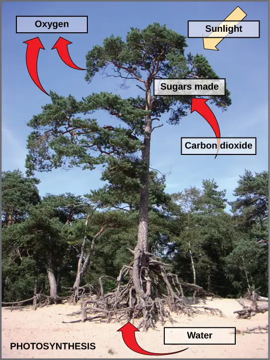
The following is the chemical equation for photosynthesis (Figure 8.5):
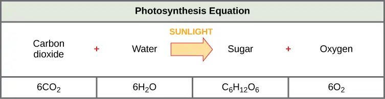
Although the equation looks simple, the many steps that take place during photosynthesis are actually quite complex. Before learning the details of how photoautotrophs turn sunlight into food, it is important to become familiar with the structures involved.
Basic Photosynthetic Structures¶
In plants, photosynthesis generally takes place in leaves, which consist of several layers of cells. The process of photosynthesis occurs in a middle layer called the mesophyll. The gas exchange of carbon dioxide and oxygen occurs through small, regulated openings called stomata (singular: stoma), which also play roles in the regulation of gas exchange and water balance. The stomata are typically located on the underside of the leaf, which helps to minimize water loss due to high temperatures on the upper surface of the leaf. Each stoma is flanked by guard cells that regulate the opening and closing of the stomata by swelling or shrinking in response to osmotic changes.
In all autotrophic eukaryotes, photosynthesis takes place inside an organelle called a chloroplast. For plants, chloroplast-containing cells exist mostly in the mesophyll. Chloroplasts have a double membrane envelope (composed of an outer membrane and an inner membrane), and are ancestrally derived from ancient free-living cyanobacteria. Within the chloroplast are stacked, disc-shaped structures called thylakoids. Embedded in the thylakoid membrane is chlorophyll, a pigment (molecule that absorbs light) responsible for the initial interaction between light and plant material, and numerous proteins that make up the electron transport chain. The thylakoid membrane encloses an internal space called the thylakoid lumen. As shown in Figure 8.6, a stack of thylakoids is called a granum, and the liquid-filled space surrounding the granum is called stroma or “bed” (not to be confused with stoma or “mouth,” an opening on the leaf epidermis).
Visual Connection
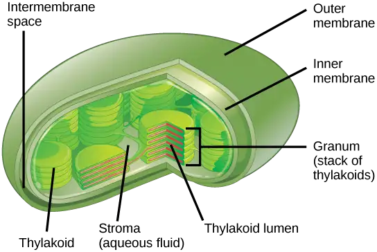
On a hot, dry day, the guard cells of plants close their stomata to conserve water. What impact will this have on photosynthesis?
The Two Parts of Photosynthesis¶
Photosynthesis takes place in two sequential stages: the light-dependent reactions and the light-independent reactions. In the light-dependent reactions, energy from sunlight is absorbed by chlorophyll and that energy is converted into stored chemical energy. In the light-independent reactions, the chemical energy harvested during the light-dependent reactions drives the assembly of sugar molecules from carbon dioxide. Therefore, although the light-independent reactions do not use light as a reactant, they require the products of the light-dependent reactions to function. In addition, however, several enzymes of the light-independent reactions are activated by light. The light-dependent reactions utilize certain molecules to temporarily store the energy: These are referred to as energy carriers. The energy carriers that move energy from light-dependent reactions to light-independent reactions can be thought of as “full” because they are rich in energy. After the energy is released, the “empty” energy carriers return to the light-dependent reaction to obtain more energy. Figure 8.7 illustrates the components inside the chloroplast where the light-dependent and light-independent reactions take place.
![This illustration shows a chloroplast with an outer membrane, an inner membrane, and stacks of membranes inside the inner membrane called thylakoids. The entire stack is called a granum. In the light reactions, energy from sunlight is converted into chemical energy in the form of A T P and N A D P H. In the process, water is used and oxygen is produced. Energy from A T P and N A D P H are used to power the Calvin cycle, which produces G 3 P from carbon dioxide. A T P is broken down to A D P and Pi, and N A D P H is oxidized to N A D P superscript plus sign baseline. The cycle is completed when the light reactions convert these molecules back into A T P and N A D P H.](img/figure-08-01-06-7c77.webp)
Interactive
Click the link to learn more about photosynthesis.
Everyday Connection: Photosynthesis at the Grocery Store
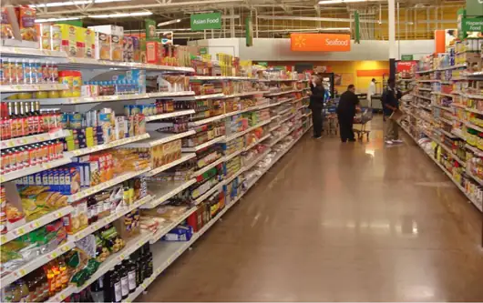
Major grocery stores in the United States are organized into departments, such as dairy, meats, produce, bread, cereals, and so forth. Each aisle (Figure 8.8) contains hundreds, if not thousands, of different products for customers to buy and consume.
Although there is a large variety, each item ultimately can be linked back to photosynthesis. Meats and dairy link, because the animals were fed plant-based foods. The breads, cereals, and pastas come largely from starchy grains, which are the seeds of photosynthesis-dependent plants. What about desserts and drinks? All of these products contain sugar—sucrose is a plant product, a disaccharide, a carbohydrate molecule, which is built directly from photosynthesis. Moreover, many items are less obviously derived from plants: For instance, paper goods are generally plant products, and many plastics (abundant as products and packaging) are derived from “algae” (unicellular plant-like organisms, and cyanobacteria). Virtually every spice and flavoring in the spice aisle was produced by a plant as a leaf, root, bark, flower, fruit, or stem. Ultimately, photosynthesis connects to every meal and every food a person consumes.
8.2 The Light-Dependent Reactions of Photosynthesis¶
Learning Objectives
By the end of this section, you will be able to do the following:
- Explain how plants absorb energy from sunlight
- Describe short and long wavelengths of light
- Describe how and where photosynthesis takes place within a plant
How can light energy be used to make food? When a person turns on a lamp, electrical energy becomes light energy. Like all other forms of kinetic energy, light can travel, change form, and be harnessed to do work. In the case of photosynthesis, light energy is converted into chemical energy, which photoautotrophs use to build basic carbohydrate molecules (Figure 8.9). However, autotrophs only use a few specific wavelengths of sunlight.
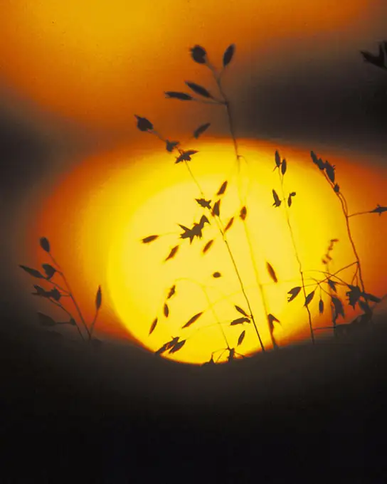
What Is Light Energy?¶
The sun emits an enormous amount of electromagnetic radiation (solar energy in a spectrum from very short gamma rays to very long radio waves). Humans can see only a tiny fraction of this energy, which we refer to as “visible light.” The manner in which solar energy travels is described as waves. Scientists can determine the amount of energy of a wave by measuring its wavelength (shorter wavelengths are more powerful than longer wavelengths)—the distance between consecutive crest points of a wave. Therefore, a single wave is measured from two consecutive points, such as from crest to crest or from trough to trough (Figure 8.10).
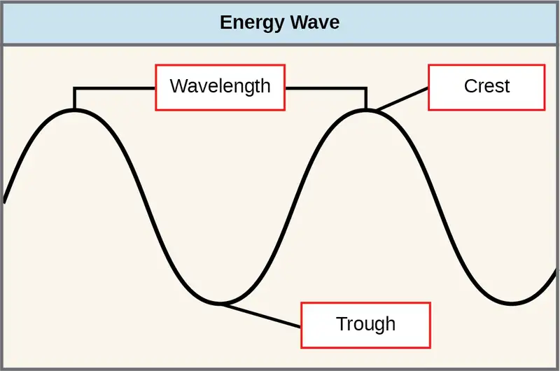
Visible light constitutes only one of many types of electromagnetic radiation emitted from the sun and other stars. Scientists differentiate the various types of radiant energy from the sun within the electromagnetic spectrum. The electromagnetic spectrum is the range of all possible frequencies of radiation (Figure 8.11). The difference between wavelengths relates to the amount of energy carried by them.
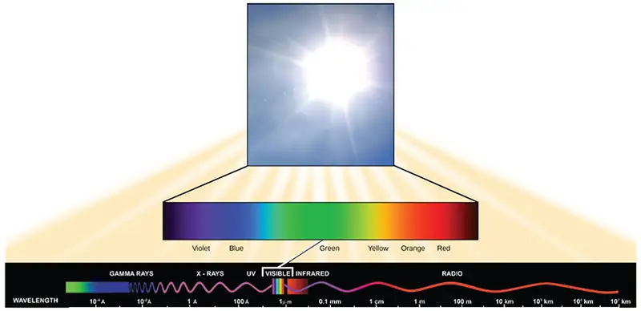
Each type of electromagnetic radiation travels at a particular wavelength. The longer the wavelength, the less energy it carries. Short, tight waves carry the most energy. This may seem illogical, but think of it in terms of a piece of moving heavy rope. It takes little effort by a person to move a rope in long, wide waves. To make a rope move in short, tight waves, a person would need to apply significantly more energy.
The electromagnetic spectrum (Figure 8.11) shows several types of electromagnetic radiation originating from the sun, including X-rays and ultraviolet (UV) rays. The higher-energy waves can penetrate tissues and damage cells and DNA, which explains why both X-rays and UV rays can be harmful to living organisms.
Absorption of Light¶
Light energy initiates the process of photosynthesis when pigments absorb specific wavelengths of visible light. Organic pigments, whether in the human retina or the chloroplast thylakoid, have a narrow range of energy levels that they can absorb. Energy levels lower than those represented by red light are insufficient to raise an orbital electron to an excited (quantum) state. Energy levels higher than those in blue light will physically tear the molecules apart, in a process called bleaching. Our retinal pigments can only “see” (absorb) wavelengths between 700 nm and 400 nm of light, a spectrum that is therefore called visible light. For the same reasons, plants, pigment molecules absorb only light in the wavelength range of 700 nm to 400 nm; plant physiologists refer to this range for plants as photosynthetically active radiation.
The visible light seen by humans as white light actually exists in a rainbow of colors. Certain objects, such as a prism or a drop of water, disperse white light to reveal the colors to the human eye. The visible light portion of the electromagnetic spectrum shows the rainbow of colors, with violet and blue having shorter wavelengths, and therefore higher energy. At the other end of the spectrum toward red, the wavelengths are longer and have lower energy (Figure 8.13).
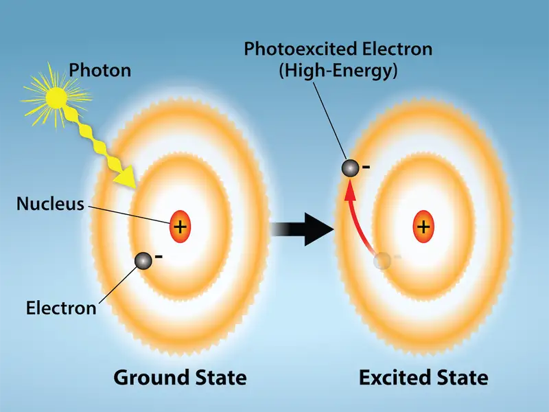
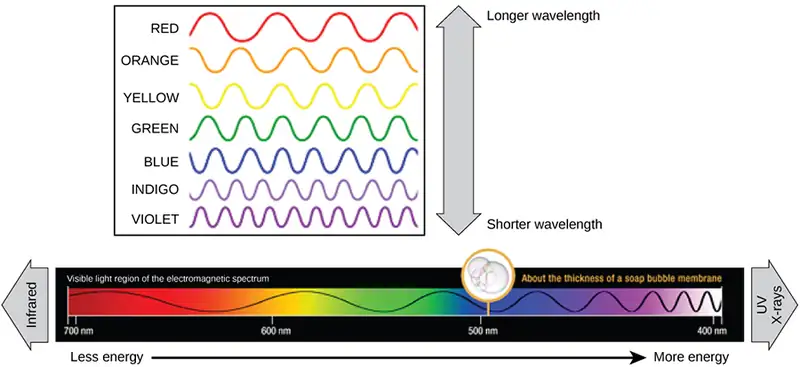
Understanding Pigments¶
Different kinds of pigments exist, and each absorbs only specific wavelengths (colors) of visible light. Pigments reflect or transmit the wavelengths they cannot absorb, making them appear a mixture of the reflected or transmitted light colors.
Chlorophylls and carotenoids are the two major classes of photosynthetic pigments found in plants and algae; each class has multiple types of pigment molecules. There are five major chlorophylls: a, b, c and d and a related molecule found in prokaryotes called bacteriochlorophyll. Chlorophyll a and chlorophyll b are found in higher plant chloroplasts and will be the focus of the following discussion.
With dozens of different forms, carotenoids are a much larger group of pigments. The carotenoids found in fruit—such as the red of tomato (lycopene), the yellow of corn seeds (zeaxanthin), or the orange of an orange peel (β-carotene)—are used as advertisements to attract seed dispersers. In photosynthesis, carotenoids function as photosynthetic pigments that are very efficient molecules for the disposal of excess energy. When a leaf is exposed to full sun, the light-dependent reactions are required to process an enormous amount of energy; if that energy is not handled properly, it can do significant damage. Therefore, many carotenoids reside in the thylakoid membrane, absorb excess energy, and safely dissipate that energy as heat.
Each type of pigment can be identified by the specific pattern of wavelengths it absorbs from visible light: This is termed the absorption spectrum. The graph in Figure 8.14 shows the absorption spectra for chlorophyll a, chlorophyll b, and a type of carotenoid pigment called β-carotene (which absorbs blue and green light). Notice how each pigment has a distinct set of peaks and troughs, revealing a highly specific pattern of absorption. Chlorophyll a absorbs wavelengths from either end of the visible spectrum (blue and red), but not green. Because green is reflected or transmitted, chlorophyll appears green. Carotenoids absorb in the short-wavelength blue region, and reflect the longer yellow, red, and orange wavelengths.
![Chlorophyll a and chlorophyll b are made up of a long hydrocarbon chain attached to a large, complex ring made up of nitrogen and carbon. Magnesium is associated with the center of the ring. Chlorophyll b differs from chlorophyll a in that it has a C H O group instead of a C H 3 group associated with one part of the ring. Beta-carotene is a branched hydrocarbon with a six-membered carbon ring at each end. Each chart shows the absorbance spectra for chlorophyll a, chlorophyll b, and beta-carotene. The three pigments absorb blue-green and orange-red wavelengths of light but have slightly different spectra.](img/figure-08-02-05abcd-d386.webp)
Many photosynthetic organisms have a mixture of pigments, and by using these pigments, the organism can absorb energy from a wider range of wavelengths. Not all photosynthetic organisms have full access to sunlight. Some organisms grow underwater where light intensity and quality decrease and change with depth. Other organisms grow in competition for light. Plants on the rainforest floor must be able to absorb any bit of light that comes through, because the taller trees absorb most of the sunlight and scatter the remaining solar radiation (Figure 8.15).
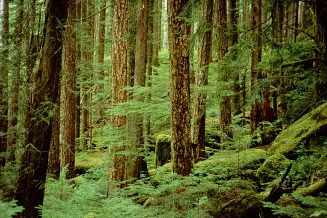
When studying a photosynthetic organism, scientists can determine the types of pigments present by generating absorption spectra. An instrument called a spectrophotometer can differentiate which wavelengths of light a substance can absorb. Spectrophotometers measure transmitted light and compute from it the absorption. By extracting pigments from leaves and placing these samples into a spectrophotometer, scientists can identify which wavelengths of light an organism can absorb. Additional methods for the identification of plant pigments include various types of chromatography that separate the pigments by their relative affinities to solid and mobile phases.
How Light-Dependent Reactions Work¶
The overall function of light-dependent reactions is to convert solar energy into chemical energy in the form of NADPH and ATP. This chemical energy supports the light-independent reactions and fuels the assembly of sugar molecules. The light-dependent reactions are depicted in Figure 8.16. Protein complexes and pigment molecules work together to produce NADPH and ATP. The numbering of the photosystems is derived from the order in which they were discovered, not in the order of the transfer of electrons.
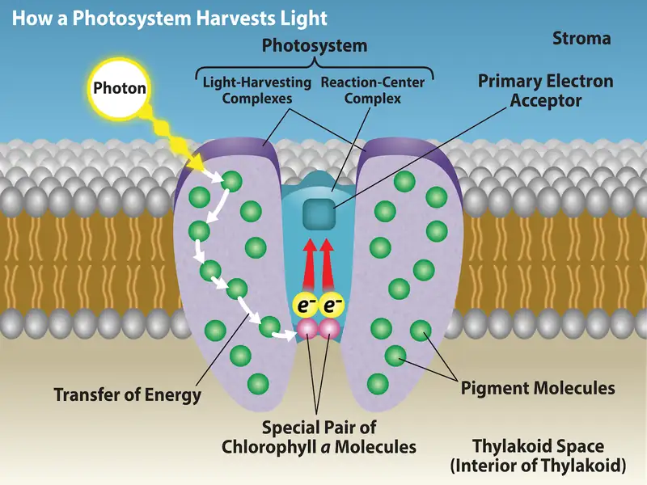
The actual step that converts light energy into chemical energy takes place in a multiprotein complex called a photosystem, two types of which are found embedded in the thylakoid membrane: photosystem II (PSII) and photosystem I (PSI) (Figure 8.17). The two complexes differ on the basis of what they oxidize (that is, the source of the low-energy electron supply) and what they reduce (the place to which they deliver their energized electrons).
Both photosystems have the same basic structure; a number of antenna pigments to which the chlorophyll molecules are bound surround the reaction center where the photochemistry takes place. Each photosystem is serviced by the light-harvesting complex, which passes energy from sunlight to the reaction center; it consists of multiple antenna pigments that contain a mixture of 300 to 400 chlorophyll a and b molecules as well as other pigments like carotenoids. The absorption of a single photon or distinct quantity or “packet” of light by any of the chlorophylls pushes that molecule into an excited state. In short, the light energy has now been captured by biological molecules but is not stored in any useful form yet. The energy is transferred from chlorophyll to chlorophyll until eventually (after about a millionth of a second), it is delivered to the reaction center. Up to this point, only energy has been transferred between molecules, not electrons.
Visual Connection
![This illustration shows the components involved in the light reactions, which are all embedded in the thylakoid membrane. Photosystem I I uses light energy to strip electrons from water, producing half an oxygen molecule and two protons in the process. The excited electron is then passed through the chloroplast electron transport chain to photosystem I. Photosystem I passes the electron to N A D P superscript plus sign baseline reductase, which uses it to convert N A D P superscript plus sign baseline and a proton to N A D P H. As the electron transport chain moves electrons, it pumps protons into the thylakoid lumen. The splitting of water also adds protons to the lumen, and the reduction of N A D P H removes protons from the stroma. The net result is a low lower case p upper case H inside the thylakoid lumen, and a high lower p upper H outside, in the stroma. A T P synthase embedded the thylakoid membrane moves protons down their electrochemical gradient, from the lumen to the stroma, and uses the energy from this gradient to make A T P.](img/figure-08-02-08-07c9.webp)
What is the initial source of electrons for the chloroplast electron transport chain?
- water
- oxygen
- carbon dioxide
- NADPH
The reaction center contains a pair of chlorophyll a molecules with a special property. Those two chlorophylls can undergo oxidation upon excitation; they can actually give up an electron in a process called a photoact. It is at this step in the reaction center during photosynthesis that light energy is converted into an excited electron. All of the subsequent steps involve getting that electron onto the energy carrier NADPH for delivery to the Calvin cycle where the electron is deposited onto carbon for long-term storage in the form of a carbohydrate. PSII and PSI are two major components of the photosynthetic electron transport chain, which also includes the cytochrome complex. The cytochrome complex, an enzyme composed of two protein complexes, transfers the electrons from the carrier molecule plastoquinone (Pq) to the protein plastocyanin (Pc), thus enabling both the transfer of protons across the thylakoid membrane and the transfer of electrons from PSII to PSI.
The reaction center of PSII (called P680) delivers its high-energy electrons, one at the time, to the primary electron acceptor, and through the electron transport chain (Pq to cytochrome complex to plastocyanine) to PSI. P680’s missing electron is replaced by extracting a low-energy electron from water; thus, water is “split” during this stage of photosynthesis, and PSII is re-reduced after every photoact. Splitting one H2O molecule releases two electrons, two hydrogen atoms, and one atom of oxygen. However, splitting two molecules is required to form one molecule of diatomic O2 gas. About 10 percent of the oxygen is used by mitochondria in the leaf to support oxidative phosphorylation. The remainder escapes to the atmosphere where it is used by aerobic organisms to support respiration.
As electrons move through the proteins that reside between PSII and PSI, they lose energy. This energy is used to move hydrogen atoms from the stromal side of the membrane to the thylakoid lumen. Those hydrogen atoms, plus the ones produced by splitting water, accumulate in the thylakoid lumen and will be used to synthesize ATP in a later step. Because the electrons have lost energy prior to their arrival at PSI, they must be re-energized by PSI, hence, another photon is absorbed by the PSI antenna. That energy is relayed to the PSI reaction center (called P700). P700 is oxidized and sends a high-energy electron to NADP+ to form NADPH. Thus, PSII captures the energy to create proton gradients to make ATP, and PSI captures the energy to reduce NADP+ into NADPH. The two photosystems work in concert, in part, to guarantee that the production of NADPH will roughly equal the production of ATP. Other mechanisms exist to fine-tune that ratio to exactly match the chloroplast’s constantly changing energy needs.
Generating an Energy Carrier: ATP¶
As in the intermembrane space of the mitochondria during cellular respiration, the buildup of hydrogen ions inside the thylakoid lumen creates a concentration gradient. The passive diffusion of hydrogen ions from high concentration (in the thylakoid lumen) to low concentration (in the stroma) is harnessed to create ATP, just as in the electron transport chain of cellular respiration. The ions build up energy because of diffusion and because they all have the same electrical charge, repelling each other.
To release this energy, hydrogen ions will rush through any opening, similar to water jetting through a hole in a dam. In the thylakoid, that opening is a passage through a specialized protein channel called the ATP synthase. The energy released by the hydrogen ion stream allows ATP synthase to attach a third phosphate group to ADP, which forms a molecule of ATP (Figure 8.17). The flow of hydrogen ions through ATP synthase is called chemiosmosis because the ions move from an area of high to an area of low concentration through a semi-permeable structure of the thylakoid.
Interactive
Visit this site and click through the animation to view the process of photosynthesis within a leaf.
8.3 Using Light Energy to Make Organic Molecules¶
Learning Objectives
By the end of this section, you will be able to do the following:
- Describe the Calvin cycle
- Define carbon fixation
- Explain how photosynthesis works in the energy cycle of all living organisms
After the energy from the sun is converted into chemical energy and temporarily stored in ATP and NADPH molecules, the cell has the fuel needed to build carbohydrate molecules for long-term energy storage. The products of the light-dependent reactions, ATP and NADPH, have lifespans in the range of millionths of seconds, whereas the products of the light-independent reactions (carbohydrates and other forms of reduced carbon) can survive almost indefinitely. The carbohydrate molecules made will have a backbone of carbon atoms. But where does the carbon come from? It comes from carbon dioxide—the gas that is a waste product of respiration in microbes, fungi, plants, and animals.
The Calvin Cycle¶
In plants, carbon dioxide (CO2) enters the leaves through stomata, where it diffuses over short distances through intercellular spaces until it reaches the mesophyll cells. Once in the mesophyll cells, CO2 diffuses into the stroma of the chloroplast—the site of light-independent reactions of photosynthesis. These reactions actually have several names associated with them. Another term, the Calvin cycle, is named for the man who discovered it, and because these reactions function as a cycle. Others call it the Calvin-Benson cycle to include the name of another scientist involved in its discovery. The most outdated name is “dark reaction,” because light is not directly required (Figure 8.18). However, the term dark reaction can be misleading because it implies incorrectly that the reaction only occurs at night or is independent of light, which is why most scientists and instructors no longer use it.
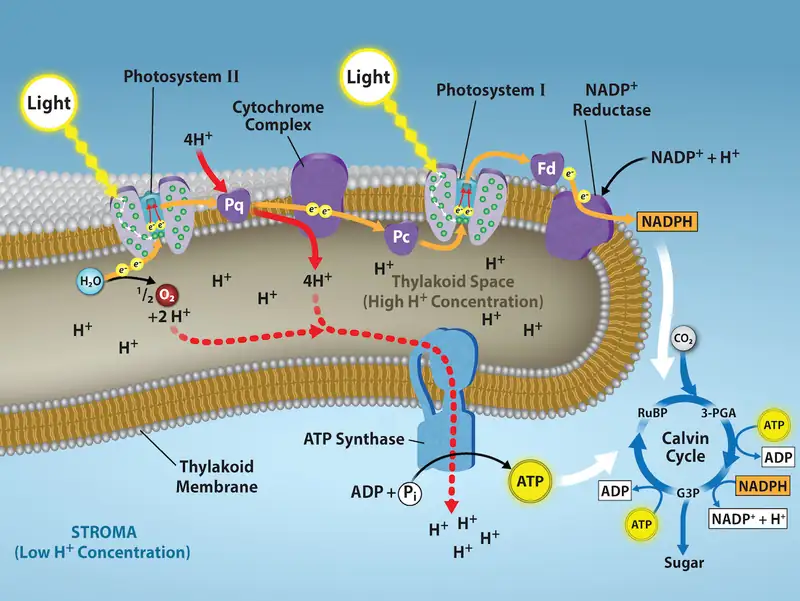
The light-independent reactions of the Calvin cycle can be organized into three basic stages: fixation, reduction, and regeneration.
Stage 1: Fixation¶
In the stroma, in addition to CO2,two other components are present to initiate the light-independent reactions: an enzyme called ribulose-1,5-bisphosphate carboxylase/oxygenase (RuBisCO), and three molecules of ribulose bisphosphate (RuBP), as shown in Figure 8.19. RuBP has five atoms of carbon, flanked by two phosphates.
Visual Connection
![A diagram of the Calvin cycle is shown with its three stages: carbon fixation, 3 dash phosphoglycerate (3 dash P G A) reduction, and regeneration of upper case R lower case u upper case B upper case P. In stage 1, the enzyme upper R lower u upper B lower i lower s upper C upper O adds a carbon dioxide to the five-carbon molecule upper R lower u upper B upper P, producing two three-carbon 3 dash P G A molecules. In stage 2, two N A D P H and two A T P are used to reduce 3 dash P G A to G 3 P. In stage 3 upper R lower u upper B upper P is regenerated from G 3 P. One A T P is used in the process. Three complete cycles produces one new G 3 P, which is shunted out of the cycle and made into glucose, whose molecular formula is upper C subscript 6 baseline upper H subscript 12 baseline upper O subscript 6 baseline.](img/figure-08-03-02.webp)
Which of the following statements is true?
- In photosynthesis, oxygen, carbon dioxide, ATP, and NADPH are reactants. G3P and water are products.
- In photosynthesis, chlorophyll, water, and carbon dioxide are reactants. G3P and oxygen are products.
- In photosynthesis, water, carbon dioxide, ATP, and NADPH are reactants. RuBP and oxygen are products.
- In photosynthesis, water and carbon dioxide are reactants. G3P and oxygen are products.
RuBisCO catalyzes a reaction between CO2 and RuBP. For each CO2 molecule that reacts with one RuBP, two molecules of another compound 3-phospho glyceric acid (3-PGA) form. PGA has three carbons and one phosphate. Each turn of the cycle involves only one RuBP and one carbon dioxide and forms two molecules of 3-PGA. The number of carbon atoms remains the same, as the atoms move to form new bonds during the reactions (3 C atoms from 3CO2 + 15 C atoms from 3RuBP = 18 C atoms in 6 molecules of 3-PGA). This process is called carbon fixation, because CO2 is “fixed” from an inorganic form into organic molecules.
Stage 2: Reduction¶
ATP and NADPH are used to convert the six molecules of 3-PGA into six molecules of a chemical called glyceraldehyde 3-phosphate (G3P). That is a reduction reaction because it involves the gain of electrons by 3-PGA. (Recall that a reduction is the gain of an electron by an atom or molecule.) Six molecules of both ATP and NADPH are used. For ATP, energy is released with the loss of the terminal phosphate atom, converting it into ADP; for NADPH, both energy and a hydrogen atom are lost, converting it into NADP+. Both of these molecules return to the nearby light-dependent reactions to be reused and re-energized.
Stage 3: Regeneration¶
Interestingly, at this point, only one of the G3P molecules leaves the Calvin cycle and is sent to the cytoplasm to contribute to the formation of other compounds needed by the plant. Because the G3P exported from the chloroplast has three carbon atoms, it takes three “turns” of the Calvin cycle to fix enough net carbon to export one G3P. But each turn makes two G3Ps, thus three turns make six G3Ps. One is exported while the remaining five G3P molecules remain in the cycle and are used to regenerate RuBP, which enables the system to prepare for more CO2 to be fixed. Three more molecules of ATP are used in these regeneration reactions.
Interactive
This link leads to an animation of photosynthesis and the Calvin cycle.
Evolution Connection: Photosynthesis
During the evolution of photosynthesis, a major shift occurred from the bacterial type of photosynthesis that involves only one photosystem and is typically anoxygenic (does not generate oxygen) into modern oxygenic (does generate oxygen) photosynthesis, employing two photosystems. This modern oxygenic photosynthesis is used by many organisms—from giant tropical leaves in the rainforest to tiny cyanobacterial cells—and the process and components of this photosynthesis remain largely the same. Photosystems absorb light and use electron transport chains to convert energy into the chemical energy of ATP and NADH. The subsequent light-independent reactions then assemble carbohydrate molecules with this energy.
In the harsh dry heat of the desert, plants must conserve and use every drop of water to survive. Because stomata must open to allow for the uptake of CO2, water escapes from the leaf during active photosynthesis. Desert plants have evolved processes to conserve water and deal with harsh conditions. Mechanisms to capture and store CO2 allows plants to adapt to living with less water. Some plants such as cacti (Figure 8.20) can prepare materials for photosynthesis during the night by a temporary carbon fixation/storage process, because opening the stomata at this time conserves water due to cooler temperatures. During the day cacti use the captured CO2 for photosynthesis, and keep their stomata closed.
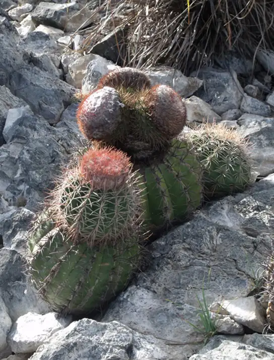
The Energy Flow¶
Whether the organism is a bacterium, plant, or animal, all living things access energy by breaking down carbohydrate and other carbon-rich organic molecules. But if plants make carbohydrate molecules, why would they need to break them down, especially when it has been shown that the gas organisms release as a “waste product” (CO2) acts as a substrate for the formation of more food in photosynthesis? Remember, living things need energy to perform life functions. In addition, an organism can either make its own food or eat another organism—either way, the food still needs to be broken down. Finally, in the process of breaking down food, called cellular respiration, heterotrophs release needed energy and produce “waste” in the form of CO2 gas.
However, in nature, there is no such thing as “waste.” Every single atom of matter and energy is conserved, recycled over and over infinitely. Substances change form or move from one type of molecule to another, but their constituent atoms never disappear (Figure 8.22).
In reality, CO2 is no more a form of waste than oxygen is wasteful to photosynthesis. Both are byproducts of reactions that move on to other reactions. Photosynthesis absorbs light energy to build carbohydrates in chloroplasts, and aerobic cellular respiration releases energy by using oxygen to metabolize carbohydrates in the cytoplasm and mitochondria. Both processes use electron transport chains to capture the energy necessary to drive other reactions. These two powerhouse processes, photosynthesis and cellular respiration, function in biological, cyclical harmony to allow organisms to access life-sustaining energy that originates millions of miles away in a burning star humans call the sun.
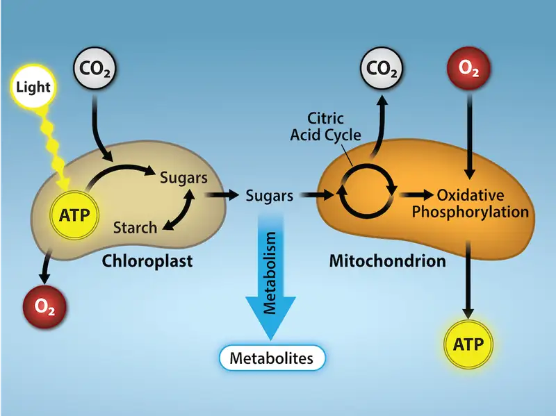
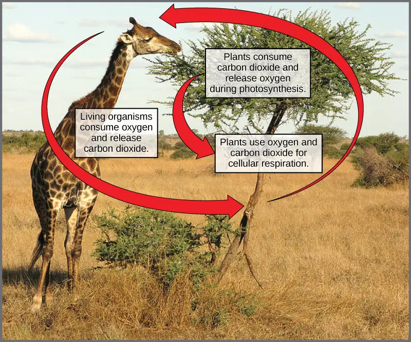
Chapter Review¶
Key Terms¶
- absorption spectrum
- range of wavelengths of electromagnetic radiation absorbed by a given substance
- antenna pigment
- pigment molecule that directly absorbs light and transfers the energy absorbed to other pigment molecules
- Calvin cycle
- light-independent reactions of photosynthesis that convert carbon dioxide from the atmosphere into carbohydrates using the energy and reducing power of ATP and NADPH
- carbon fixation
- process of converting inorganic CO2 gas into organic compounds
- carotenoid
- photosynthetic pigment (yellow-orange-red) that functions to dispose of excess energy
- chemoautotroph
- organism that can build organic molecules using energy derived from inorganic chemicals instead of sunlight
- chlorophyll a
- form of chlorophyll that absorbs violet-blue and red light and consequently has a bluish-green color; the only pigment molecule that performs the photochemistry by getting excited and losing an electron to the electron transport chain
- chlorophyll b
- accessory pigment that absorbs blue and red-orange light and consequently has a yellowish-green tint
- chloroplast
- organelle in which photosynthesis takes place
- cytochrome complex
- group of reversibly oxidizable and reducible proteins that forms part of the electron transport chain between photosystem II and photosystem I
- electromagnetic spectrum
- range of all possible frequencies of radiation
- electron transport chain
- group of proteins between PSII and PSI that pass energized electrons and use the energy released by the electrons to move hydrogen ions against their concentration gradient into the thylakoid lumen
- granum
- stack of thylakoids located inside a chloroplast
- heterotroph
- organism that consumes organic substances or other organisms for food
- light harvesting complex
- complex that passes energy from sunlight to the reaction center in each photosystem; it consists of multiple antenna pigments that contain a mixture of 300 to 400 chlorophyll a and b molecules as well as other pigments like carotenoids
- light-dependent reaction
- first stage of photosynthesis where certain wavelengths of the visible light are absorbed to form two energy-carrying molecules (ATP and NADPH)
- light-independent reaction
- second stage of photosynthesis, through which carbon dioxide is used to build carbohydrate molecules using energy from ATP and NADPH
- mesophyll
- middle layer of chlorophyll-rich cells in a leaf
- P680
- reaction center of photosystem II
- P700
- reaction center of photosystem I
- photoact
- ejection of an electron from a reaction center using the energy of an absorbed photon
- photoautotroph
- organism capable of producing its own organic compounds from sunlight
- photon
- distinct quantity or “packet” of light energy
- photosystem
- group of proteins, chlorophyll, and other pigments that are used in the light-dependent reactions of photosynthesis to absorb light energy and convert it into chemical energy
- photosystem I
- integral pigment and protein complex in thylakoid membranes that uses light energy to transport electrons from plastocyanin to NADP+ (which becomes reduced to NADPH in the process)
- photosystem II
- integral protein and pigment complex in thylakoid membranes that transports electrons from water to the electron transport chain; oxygen is a product of PSII
- pigment
- molecule that is capable of absorbing certain wavelengths of light and reflecting others (which accounts for its color)
- primary electron acceptor
- pigment or other organic molecule in the reaction center that accepts an energized electron from the reaction center
- reaction center
- complex of chlorophyll molecules and other organic molecules that is assembled around a special pair of chlorophyll molecules and a primary electron acceptor; capable of undergoing oxidation and reduction
- reduction
- gain of electron(s) by an atom or molecule
- spectrophotometer
- instrument that can measure transmitted light and compute the absorption
- stoma
- opening that regulates gas exchange and water evaporation between leaves and the environment, typically situated on the underside of leaves
- stroma
- fluid-filled space surrounding the grana inside a chloroplast where the light-independent reactions of photosynthesis take place
- thylakoid
- disc-shaped, membrane-bound structure inside a chloroplast where the light-dependent reactions of photosynthesis take place; stacks of thylakoids are called grana
- thylakoid lumen
- aqueous space bound by a thylakoid membrane where protons accumulate during light-driven electron transport
- wavelength
- distance between consecutive points of equal position (two crests or two troughs) of a wave in a graphic representation; inversely proportional to the energy of the radiation
Summary¶
8.1 Overview of Photosynthesis¶
The process of photosynthesis transformed life on Earth. By harnessing energy from the sun, the evolution of photosynthesis allowed living things access to enormous amounts of energy. Because of photosynthesis, living things gained access to sufficient energy that allowed them to build new structures and achieve the biodiversity evident today.
Only certain organisms (photoautotrophs), can perform photosynthesis; they require the presence of chlorophyll, a specialized pigment that absorbs certain wavelengths of the visible spectrum and can capture energy from sunlight. Photosynthesis uses carbon dioxide and water to assemble carbohydrate molecules and release oxygen as a byproduct into the atmosphere. Eukaryotic autotrophs, such as plants and algae, have organelles called chloroplasts in which photosynthesis takes place, and starch accumulates. In prokaryotes, such as cyanobacteria, the process is less localized and occurs within folded membranes, extensions of the plasma membrane, and in the cytoplasm.
8.2 The Light-Dependent Reactions of Photosynthesis¶
The pigments of the first part of photosynthesis, the light-dependent reactions, absorb energy from sunlight. A photon strikes the antenna pigments of photosystem II to initiate photosynthesis. The energy travels to the reaction center that contains chlorophyll a and then to the electron transport chain, which pumps hydrogen ions into the thylakoid interior. This action builds up a high concentration of hydrogen ions. The hydrogen ions flow through ATP synthase during chemiosmosis to form molecules of ATP, which are used for the formation of sugar molecules in the second stage of photosynthesis. Photosystem I absorbs a second photon, which results in the formation of an NADPH molecule, another energy and reducing carrier for the light-independent reactions.
8.3 Using Light Energy to Make Organic Molecules¶
Using the energy carriers formed in the first steps of photosynthesis, the light-independent reactions, or the Calvin cycle, take in CO2 from the atmosphere. An enzyme, RuBisCO, catalyzes a reaction with CO2 and another organic compound, RuBP. After three cycles, a three-carbon molecule of G3P leaves the cycle to become part of a carbohydrate molecule. The remaining G3P molecules stay in the cycle to be regenerated into RuBP, which is then ready to react with more CO2. Photosynthesis forms an energy cycle with the process of cellular respiration. Because plants contain both chloroplasts and mitochondria, they rely upon both photosynthesis and respiration for their ability to function in both the light and dark, and to be able to interconvert essential metabolites.
Visual Connection Questions¶
8.1 Overview of Photosynthesis¶
1. Figure 8.6 On a hot, dry day, the guard cells of plants close their stomata to conserve water. What impact will this have on photosynthesis?
Answer
Figure 8.6 Levels of carbon dioxide (a necessary photosynthetic substrate) will immediately fall. As a result, the rate of photosynthesis will be inhibited.
8.2 The Light-Dependent Reactions of Photosynthesis¶
2. Figure 8.17 What is the initial source of electrons for the chloroplast electron transport chain?
- Water
- Oxygen
- Carbon dioxide
- NADPH
Answer
Figure 8.17 A.
8.3 Using Light Energy to Make Organic Molecules¶
3. Figure 8.19 Which of the following statements is true?
- In photosynthesis, oxygen, carbon dioxide, ATP, and NADPH are reactants. G3P and water are products.
- In photosynthesis, chlorophyll, water, and carbon dioxide are reactants. G3P and oxygen are products.
- In photosynthesis, water, carbon dioxide, ATP, and NADPH are reactants. RuBP and oxygen are products.
- In photosynthesis, water and carbon dioxide are reactants. G3P and oxygen are products.
Answer
Review Questions¶
8.1 Overview of Photosynthesis¶
4. Which of the following components is not used by both plants and cyanobacteria to carry out photosynthesis?
- chloroplasts
- chlorophyll
- carbon dioxide
- water
Answer
A
5. What two main products result from photosynthesis?
- oxygen and carbon dioxide
- chlorophyll and oxygen
- sugars/carbohydrates and oxygen
- sugars/carbohydrates and carbon dioxide
Answer
C
6. In which compartment of the plant cell do the light-independent reactions of photosynthesis take place?
- thylakoid
- stroma
- outer membrane
- mesophyll
Answer
B
7. Which statement about thylakoids in eukaryotes is not correct?
- Thylakoids are assembled into stacks.
- Thylakoids exist as a maze of folded membranes.
- The space surrounding thylakoids is called stroma.
- Thylakoids contain chlorophyll.
Answer
B
8. Predict the end result if a chloroplast’s light-independent enzymes developed a mutation that prevented them from activating in response to light.
- G3P accumulation
- ATP and NADPH accumulation
- Water accumulation
- Carbon dioxide depletion
Answer
B
9. How are the NADPH and G3P molecules made during photosynthesis similar?
- They are both end products of photosynthesis.
- They are both substrates for photosynthesis.
- They are both produced from carbon dioxide.
- They both store energy in chemical bonds.
Answer
D
8.2 The Light-Dependent Reactions of Photosynthesis¶
10. Which of the following structures is not a component of a photosystem?
- ATP synthase
- antenna molecule
- reaction center
- primary electron acceptor
Answer
A
11. How many photons does it take to fully reduce one molecule of NADP+ to NADPH?
- 1
- 2
- 4
- 8
Answer
B
12. Which complex is not involved in the establishment of conditions for ATP synthesis?
- photosystem I
- ATP synthase
- photosystem II
- cytochrome complex
Answer
C
13. From which component of the light-dependent reactions does NADPH form most directly?
- photosystem II
- photosystem I
- cytochrome complex
- ATP synthase
Answer
B
14. Three of the same species of plant are each grown under a different colored light for the same amount of time. Plant A is grown under blue light, Plant B is grown under green light, and Plant C is grown under orange light. Assuming the plants use only chlorophyll a and chlorophyll b for photosynthesis, what would be the predicted order of the plants from most growth to least growth?
- A, C, B
- A, B, C
- C, A, B
- B, A, C
Answer
A
15. Plants containing only chlorophyll b are exposed to radiation with the following wavelengths: 10nm (x-rays), 450nm (blue light), 670nm (red light), and 800nm (infrared light). Which plants harness the most energy for photosynthesis?
- X-ray irradiated plants
- Blue light irradiated plants
- Red light irradiated plants
- Infrared irradiated plants
Answer
B
8.3 Using Light Energy to Make Organic Molecules¶
16. Which molecule must enter the Calvin cycle continually for the light-independent reactions to take place?
- RuBisCO
- RuBP
- 3-PGA
- CO2
Answer
D
17. Which order of molecular conversions is correct for the Calvin cycle?
- \(\text{RuBP + G3P}\ \rightarrow\ \text{3-PGA}\ \rightarrow\ \text{sugar}\)
- \(\text{RuBisCO}\ \rightarrow{\ \text{CO}}_{2}\ \rightarrow\ \text{RuBP}\ \rightarrow\ \text{G3P}\)
- \(\text{RuBP + CO}_{2}\ \rightarrow\ [\text{RuBisCO}]\ \text{3-PGA}\ \rightarrow\ \text{G3P}\)
- \(\text{CO}_{2}\ \rightarrow\ \text{3-PGA}\ \rightarrow\ \text{RuBP}\ \rightarrow\ \text{G3P}\)
Answer
C
18. Where in eukaryotic cells does the Calvin cycle take place?
- thylakoid membrane
- thylakoid lumen
- chloroplast stroma
- granum
Answer
C
19. Which statement correctly describes carbon fixation?
- the conversion of CO2 into an organic compound
- the use of RuBisCO to form 3-PGA
- the production of carbohydrate molecules from G3P
- the formation of RuBP from G3P molecules
- the use of ATP and NADPH to reduce CO2
Answer
A
20. If four molecules of carbon dioxide enter the Calvin cycle (four “turns” of the cycle), how many G3P molecules are produced and how many are exported?
- 4 G3P made, 1 G3P exported
- 4 G3P made, 2 G3P exported
- 8 G3P made, 1 G3P exported
- 8 G3P made, 4 G3P exported
Answer
C
Critical Thinking Questions¶
8.1 Overview of Photosynthesis¶
21. What is the overall outcome of the light reactions in photosynthesis?
Answer
The outcome of light reactions in photosynthesis is the conversion of solar energy into chemical energy that the chloroplasts can use to do work (mostly anabolic production of carbohydrates from carbon dioxide).
22. Why are carnivores, such as lions, dependent on photosynthesis to survive?
Answer
Because lions eat animals that eat plants.
23. Why are energy carriers thought of as either “full” or “empty”?
Answer
The energy carriers that move from the light-dependent reaction to the light-independent one are “full” because they bring energy. After the energy is released, the “empty” energy carriers return to the light-dependent reaction to obtain more energy. There is not much actual movement involved. Both ATP and NADPH are produced in the stroma where they are also used and reconverted into ADP, Pi, and NADP+.
24. Describe how the grey wolf population would be impacted by a volcanic eruption that spewed a dense ash cloud that blocked sunlight in a section of Yellowstone National Park.
Answer
The grey wolves are apex predators in their food web, meaning they consume smaller prey animals and are not the prey of any other animal. Blocking sunlight would prevent the plants at the bottom of the food web from performing photosynthesis. This would kill many of the plants, reducing the food sources available to smaller animals in Yellowstone. A smaller prey animal population means that fewer wolves can survive in the area, and the population of grey wolves will decrease.
25. How does the closing of the stomata limit photosynthesis?
Answer
The stomata regulate the exchange of gases and water vapor between a leaf and its surrounding environment. When the stomata are closed, the water molecules cannot escape the leaf, but the leaf also cannot acquire new carbon dioxide molecules from the environment. This limits the light-independent reactions to only continuing until the carbon dioxide stores in the leaf are depleted.
8.2 The Light-Dependent Reactions of Photosynthesis¶
26. Describe the pathway of electron transfer from photosystem II to photosystem I in light-dependent reactions.
Answer
A photon of light hits an antenna molecule in photosystem II, and the energy released by it travels through other antenna molecules to the reaction center. The energy causes an electron to leave a molecule of chlorophyll a to a primary electron acceptor protein. The electron travels through the electron transport chain and is accepted by a pigment molecule in photosystem I.
27. What are the roles of ATP and NADPH in photosynthesis?
Answer
Both of these molecules carry energy; in the case of NADPH, it has reducing power that is used to fuel the process of making carbohydrate molecules in light-independent reactions.
28. How and why would the end products of photosynthesis be changed if a plant had a mutation that eliminated its photosystem II complex?
Answer
Knocking out photosystem II would eliminate the production of oxygen and ATP during photosynthesis. Photosystem II splits water into oxygen atoms, hydrogen protons that remain in the thylakoid lumen, and hydrogen-derived electrons that move from the reaction center into the electron transport chain. The transfer of an electron through the electron transport chain provides the energy to pump more protons into the thylakoid lumen to maintain a higher concentration of protons there. Moving protons across the thylakoid membrane back to the stroma provides the energy for ATP synthase to produce ATP. Without this proton gradient, ATP will not be synthesized.
8.3 Using Light Energy to Make Organic Molecules¶
29. Why is the third stage of the Calvin cycle called the regeneration stage?
Answer
Because RuBP, the molecule needed at the start of the cycle, is regenerated from G3P.
30. Which part of the light-independent reactions would be affected if a cell could not produce the enzyme RuBisCO?
Answer
None of the cycle could take place, because RuBisCO is essential in fixing carbon dioxide. Specifically, RuBisCO catalyzes the reaction between carbon dioxide and RuBP at the start of the cycle.
31. Why does it take three turns of the Calvin cycle to produce G3P, the initial product of photosynthesis?
Answer
Because G3P has three carbon atoms, and each turn of the cycle takes in one carbon atom in the form of carbon dioxide.
32. Imagine a sealed terrarium containing a plant and a beetle. How does each organism provide resources for the other? Could each organism survive if it was the only living thing in the terrarium? Why or why not?
Answer
An energy cycle between a plant and a beetle would be as follows:
- Plant consumes carbon dioxide and releases oxygen as a byproduct of photosynthesis
- Beetle consumes oxygen and releases carbon dioxide to create chemical energy during aerobic respiration
- Plant takes up carbon dioxide from the air
- Repeat cycle
The plant would also provide a carbon-based food source for the beetle.
- The beetle is a heterotroph, and would not survive without the plant because it would deplete all the oxygen within the terrarium.
- The plant is an autotroph and could survive without the beetle, but it would be unlikely to grow. Through photosynthesis, the plant can make and store its own energy in carbon-based molecules, and produce oxygen. The oxygen can then be used to power aerobic respiration in the plant, which releases carbon dioxide. However, since the plant essentially continues to reuse its own resources cycling between carbon- and oxygen-consuming pathways, its growth would be limited.
33. Compare the flow of energy with the flow of nutrients in a closed, sunny ecosystem consisting of a giraffe and a tree.
Answer
In the defined ecosystem, energy would radiate from the Sun, and be absorbed by the chlorophyll in the leaves of the tree. Photosynthesis would occur in the leaves, transforming the light energy into stored chemical energy in the covalent bonds of carbon molecules. The giraffe would eat the leaves of the tree, and digest the carbon molecules to release energy.
In the same ecosystem, nutrients would cycle between the tree and the giraffe. The giraffe would consume oxygen and release carbon dioxide as its cells perform aerobic respiration to create chemical energy. The tree will consume the released carbon dioxide during photosynthesis to create its own stored chemical energy, and release oxygen as a by-product.
Adapted from Biology 2e by OpenStax, licensed under CC BY 4.0. Access the original for free at openstax.org. Changes: converted to the web reading format of The Open Book Project.